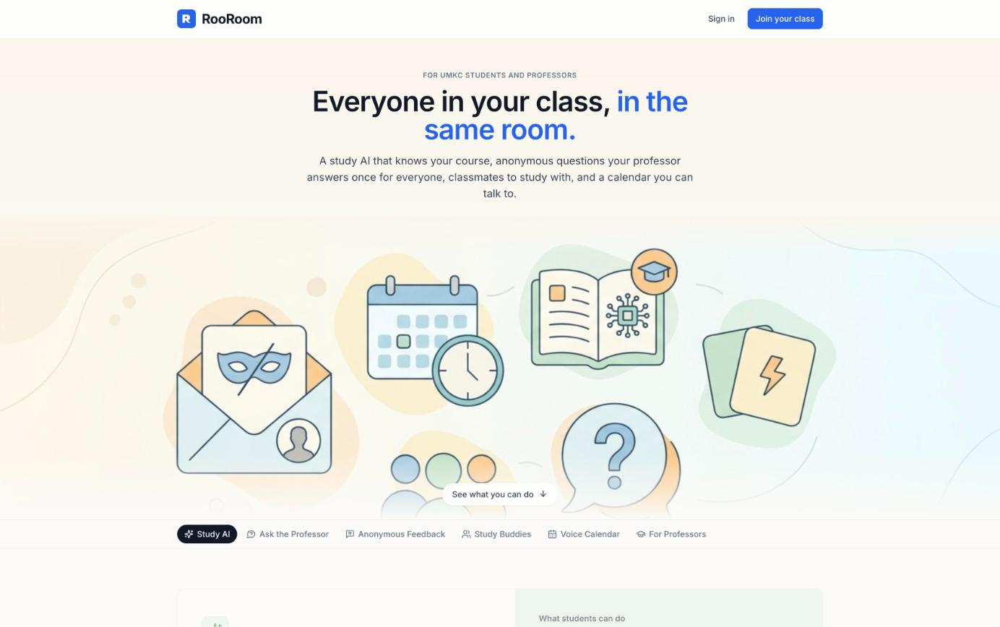
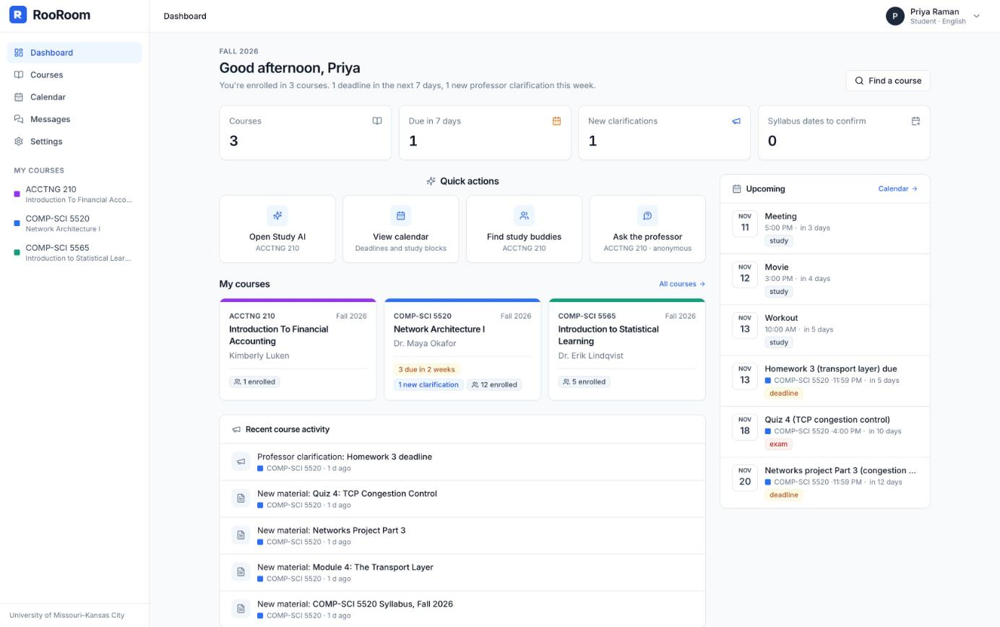
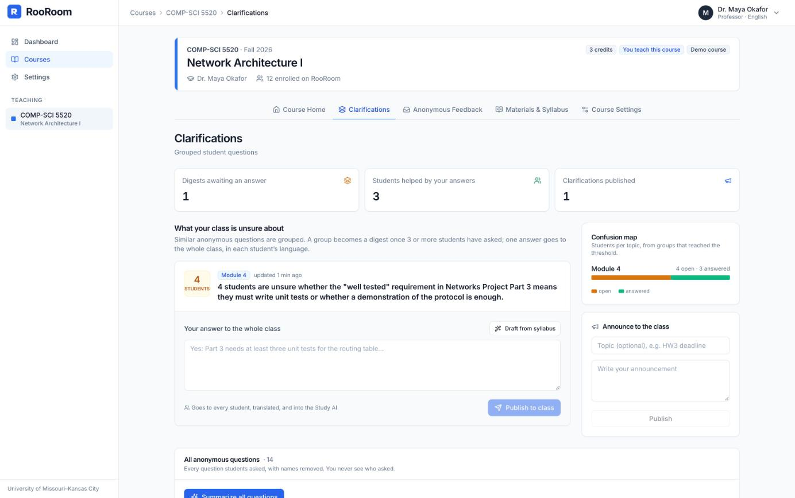
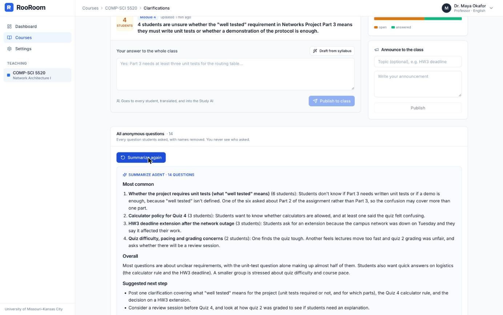

1The problem
Learning happens in one place, but help is scattered across chatbots, email and office hours.
12 amA general chatbot doesn't know this course, and happily does graded homework.
30×Professors answer the same question one email at a time, days later, in one language.
0Honest feedback never arrives, because nobody wants to be named.
Our idea: break the barrier between students and professors. Put a team of specialised AI agents inside every class. They share one course memory, so one professor answer reaches every student, in every language.
2The product
A working web app on real UMKC data: 4,951 courses from the catalog and every Fall 2026 section and professor.

Before sign-in
One scrolling page: every feature and what students can do.
Sign up
Student or professor, @umkc.edu only; professors auto-linked to their courses.

After sign-in: dashboard courses, deadlines, quick actions
Every number is live: deadlines from the syllabus, new clarifications, and one-click jumps into each agent.
A student's journey
- Join a course: search the UMKC catalog and pick your professor's section.
- Study with the Tutor Agent: answers, summaries and flashcards from course files.
- Ask anonymously; the Filter and Redactor agents clean it before anyone reads it.
- Plan by voice: the Calendar Agent books study time and syllabus deadlines.
Why not just a chatbot?
| What a student needs | General chatbot | RooRoom |
|---|
| Knows this course's files | ✗ | ✓ with source |
| Hints, not answers, on graded work | ✗ | ✓ |
| Reaches the professor anonymously | ✗ | ✓ |
| One answer reaches the whole class | ✗ | ✓ |
3Meet the agents
Each agent is an LLM loop with one job, its own instructions, and only the tools it needs. An orchestrator chains them.
Learning
Tutor AgentRAGhybrid search
Answers only from this course's files and the professor's answers, and names the file and page. Summaries and interactive flashcards with real formulas.
Integrity Guardembeddingsguardrail
Spots graded quiz and homework questions by meaning, switches the tutor to hints, and a second check rewrites any worked answer.
Ask the professor
Removes insults and slurs; refuses messages that are only abuse. Labels only, so a message can't talk it into approving itself.
Strips names, IDs and anything that could identify the student.
Groups questions by meaning; at 3 students writes the professor a one-line digest.
Summarize Agentsummarization
One click: every question or feedback note becomes "most common themes, with counts" plus next steps.
Drafts the reply; the professor edits and publishes it to the whole class.
Planning and everywhere
Calendar Voice Agentagent looptool callingvoice-to-text
"Block 2–4 on Thursday for Quiz 4." Plans, calls calendar tools, observes, repeats (up to 6 steps); asks before deleting or double-booking.
Syllabus Readerextraction
Reads a syllabus PDF and sends every deadline to students' calendars.
English first; one click translates any answer, keeping formulas intact.
Study buddies are matched from what classmates study with the Tutor and their shared free time.
4AI inside
AI agentsagent loopsorchestration
tool callingretrieval (RAG)embeddings
semantic clusteringcontent filteringNLP translation
summarizationvoice-to-texttext-to-speech
guardrailsLaTeX math rendering
How we design our agents
One job eachSmall agents with narrow instructions are easier to test and harder to misuse.
Least privilegeOnly the Calendar Agent has tools, and only on its owner's calendar.
Human in the loopProfessors approve answers; the calendar asks before risky changes.
●By the numbers
10AI agents, each with one job
4,951real UMKC courses, all majors
1,132Fall 2026 professors to choose from
1 clickto summarize every question
7The professor's view

Digest Agent 4 students, one line
Four students asked the same thing in different words; the professor sees one sentence.

Summarize Agent 14 → themes
"6 students: what does 'well tested' mean?" instead of thirty separate emails.
Read every question, names removed, never who asked
One-click summary of all questions or all feedback
Digest at 3+ students, with a drafted answer to edit
Publish once: every student, every language, plus the Tutor
Reply to anonymous notes without ever unmasking
Upload a syllabus: deadlines reach every calendar
8Securing the agents
18/18red-team attacks blocked
0outside links in AI output
100%tables under row security
Trusttext is data
Student text and PDFs reach agents as labelled untrusted data, never instructions. Agents that read it have no tools.
Authoritysee only what you may
Every agent query runs as the signed-in user under database row rules. No master key.
Egressnothing leaves
Links and images are stripped from AI output; servers reach only the model endpoint.
Next: one-time email codes (MFA) at sign-in, then a one-course pilot measuring answer quality and professor time saved.